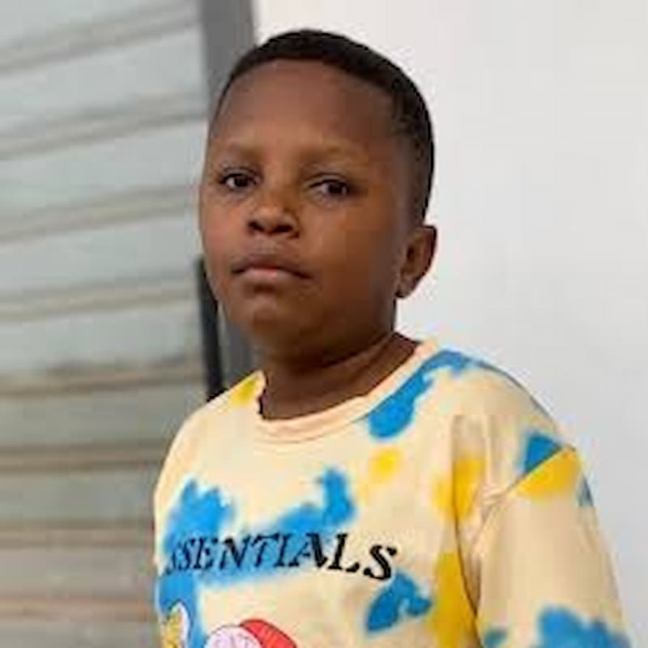

Gideon Duah | WDD 130.
Hi, my name is Gideon Duah, a Professional Actor telling African stories through film, a Tech lover, and a Graphic Designer. As an Actor, I am best known for my role in the multi award winning film Thinkback (2018), Make Me A Star Tv series (2023),Khutam (2023), Low Budget Father Christmas (2024), SEVSU (2024), Strangers Bomb (2025), and Market Queens Tv Series (2025). As a Graphic Designer, i love turning creative ideas to powerful visual experiences. i believe that great designs has the power to inspire change, strengthen brands, and make a lasting impression. Am currently a student of BYU idaho studying BSC Software development. My dream is to develop innovative apps and websites that makes life easier for Africans. I want to use technology as a tool to solve real problems such as improving access to education, healthcare, business opportunities, and communication across the continent.